Exercise 5： Let GBDF be a parallelogram. FEOC is a trapezoid with FC//EO and FC=2EO. E is the midpoint of DA. BO=AO. Prove that GC⊥BA.
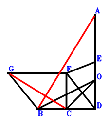
\(\because \) E is the midpoint of DA \(\therefore \small\overrightarrow{OE}=\dfrac{\small\overrightarrow{OA}}{2} + \dfrac{\small\overrightarrow{OD}}{2}\).\(\because \) FC//EO and FC=2EO \(\therefore \small\overrightarrow{OF}=\small\overrightarrow{OC} + 2 \small\overrightarrow{OE}=\small\overrightarrow{OA} + \small\overrightarrow{OC} + \small\overrightarrow{OD}\).\(\because \) GBDF is a parallelogram \(\therefore \small\overrightarrow{OG}=\small\overrightarrow{OA} + \small\overrightarrow{OB} + \small\overrightarrow{OC}\).\(\because \) BO=AO \( \therefore- \small\overrightarrow{OA}^{2} + \small\overrightarrow{OB}^{2}=0.\)In conclusion, \(\small\overrightarrow{BA} \cdot \small\overrightarrow{CG}=\left(\small\overrightarrow{OA} - \small\overrightarrow{OB}\right) \cdot \left(- \small\overrightarrow{OC} + \small\overrightarrow{OG}\right)=\left(\small\overrightarrow{OA} - \small\overrightarrow{OB}\right) \cdot \left(\small\overrightarrow{OA} + \small\overrightarrow{OB}\right)=\small\overrightarrow{OA}^{2} - \small\overrightarrow{OB}^{2}=0\), that is, GC⊥BA.
Exercise 16： Let DEOA be a trapezoid with DA//EO and DA=2EO. GCEF is a trapezoid with GC//FE and GC=2FE. F is the midpoint of BD. BO=OA. Prove that GC⊥BA.
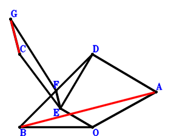
\(\because \) DA//EO and DA=2EO \(\therefore \small\overrightarrow{OE}=- \dfrac{\small\overrightarrow{OA}}{2} + \dfrac{\small\overrightarrow{OD}}{2}\).\(\because \) F is the midpoint of BD \(\therefore \small\overrightarrow{OF}=\dfrac{\small\overrightarrow{OB}}{2} + \dfrac{\small\overrightarrow{OD}}{2}\).\(\because \) GC//FE and GC=2FE \(\therefore \small\overrightarrow{OG}=\small\overrightarrow{OB} + \small\overrightarrow{OC} + \small\overrightarrow{OD} - 2 \small\overrightarrow{OE}=\small\overrightarrow{OA} + \small\overrightarrow{OB} + \small\overrightarrow{OC}\).\(\because \) BO=OA \( \therefore- \small\overrightarrow{OA}^{2} + \small\overrightarrow{OB}^{2}=0.\)In conclusion, \(\small\overrightarrow{BA} \cdot \small\overrightarrow{CG}=\left(\small\overrightarrow{OA} - \small\overrightarrow{OB}\right) \cdot \left(- \small\overrightarrow{OC} + \small\overrightarrow{OG}\right)=\left(\small\overrightarrow{OA} - \small\overrightarrow{OB}\right) \cdot \left(\small\overrightarrow{OA} + \small\overrightarrow{OB}\right)=\small\overrightarrow{OA}^{2} - \small\overrightarrow{OB}^{2}=0\), that is, GC⊥BA.
Exercise 25： Let EOFC be a trapezoid with CF//EO and CF=2EO. E is the midpoint of BA. BO=AO. Prove that CF⊥BA.
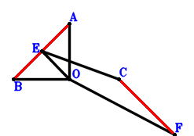
\(\because \) E is the midpoint of BA \(\therefore \small\overrightarrow{OE}=\dfrac{\small\overrightarrow{OA}}{2} + \dfrac{\small\overrightarrow{OB}}{2}\).\(\because \) CF//EO and CF=2EO \(\therefore \small\overrightarrow{OF}=\small\overrightarrow{OC} - 2 \small\overrightarrow{OE}=- \small\overrightarrow{OA} - \small\overrightarrow{OB} + \small\overrightarrow{OC}\).\(\because \) BO=AO \( \therefore- \small\overrightarrow{OA}^{2} + \small\overrightarrow{OB}^{2}=0.\)In conclusion, \(\small\overrightarrow{BA} \cdot \small\overrightarrow{FC}=\left(\small\overrightarrow{OA} - \small\overrightarrow{OB}\right) \cdot \left(\small\overrightarrow{OC} - \small\overrightarrow{OF}\right)=\left(\small\overrightarrow{OA} - \small\overrightarrow{OB}\right) \cdot \left(\small\overrightarrow{OA} + \small\overrightarrow{OB}\right)=\small\overrightarrow{OA}^{2} - \small\overrightarrow{OB}^{2}=0\), that is, CF⊥BA.
Exercise 40： Let EFAD be a parallelogram. O, E are the orthocenter and circumcenter of △DCB. BO=OA. Prove that FC⊥BA.
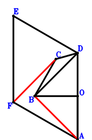
\(\because \) O, E are the orthocenter and circumcenter of △DCB \(\therefore \small\overrightarrow{OE}=\small\overrightarrow{OB} + \small\overrightarrow{OC} + \small\overrightarrow{OD}\).\(\because \) EFAD is a parallelogram \(\therefore \small\overrightarrow{OF}=\small\overrightarrow{OA} + \small\overrightarrow{OB} + \small\overrightarrow{OC}\).\(\because \) BO=OA \( \therefore- \small\overrightarrow{OA}^{2} + \small\overrightarrow{OB}^{2}=0.\)In conclusion, \(\small\overrightarrow{BA} \cdot \small\overrightarrow{CF}=\left(\small\overrightarrow{OA} - \small\overrightarrow{OB}\right) \cdot \left(- \small\overrightarrow{OC} + \small\overrightarrow{OF}\right)=\left(\small\overrightarrow{OA} - \small\overrightarrow{OB}\right) \cdot \left(\small\overrightarrow{OA} + \small\overrightarrow{OB}\right)=\small\overrightarrow{OA}^{2} - \small\overrightarrow{OB}^{2}=0\), that is, FC⊥BA.
Exercise 43： Let EBDA be a parallelogram. GFOC is a trapezoid with GC//FO and GC=2FO. F is the midpoint of ED. BO=AO. Prove that GC⊥BA.
\(\because \) EBDA is a parallelogram \(\therefore \small\overrightarrow{OE}=\small\overrightarrow{OA} + \small\overrightarrow{OB} - \small\overrightarrow{OD}\).\(\because \) F is the midpoint of ED \(\therefore \small\overrightarrow{OF}=\dfrac{\small\overrightarrow{OD}}{2} + \dfrac{\small\overrightarrow{OE}}{2}=\dfrac{\small\overrightarrow{OA}}{2} + \dfrac{\small\overrightarrow{OB}}{2}\).\(\because \) GC//FO and GC=2FO \(\therefore \small\overrightarrow{OG}=\small\overrightarrow{OC} + 2 \small\overrightarrow{OF}=\small\overrightarrow{OA} + \small\overrightarrow{OB} + \small\overrightarrow{OC}\).\(\because \) BO=AO \( \therefore- \small\overrightarrow{OA}^{2} + \small\overrightarrow{OB}^{2}=0.\)In conclusion, \(\small\overrightarrow{BA} \cdot \small\overrightarrow{CG}=\left(\small\overrightarrow{OA} - \small\overrightarrow{OB}\right) \cdot \left(- \small\overrightarrow{OC} + \small\overrightarrow{OG}\right)=\left(\small\overrightarrow{OA} - \small\overrightarrow{OB}\right) \cdot \left(\small\overrightarrow{OA} + \small\overrightarrow{OB}\right)=\small\overrightarrow{OA}^{2} - \small\overrightarrow{OB}^{2}=0\), that is, GC⊥BA.
Exercise 57： Let CGFO be a trapezoid with GC//FO and GC=2FO. E is the centroid of △DBA. F, E, C are collinear and FC=3FE. BO=AO. Prove that GD⊥BA.
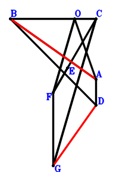
\(\because \) E is the centroid of △DBA \(\therefore \small\overrightarrow{OE}=\dfrac{\small\overrightarrow{OA}}{3} + \dfrac{\small\overrightarrow{OB}}{3} + \dfrac{\small\overrightarrow{OD}}{3}\).\(\because \) F, E, C are collinear and FC=3FE \(\therefore \small\overrightarrow{OF}=- \dfrac{\small\overrightarrow{OC}}{2} + \dfrac{3 \small\overrightarrow{OE}}{2}=\dfrac{\small\overrightarrow{OA}}{2} + \dfrac{\small\overrightarrow{OB}}{2} - \dfrac{\small\overrightarrow{OC}}{2} + \dfrac{\small\overrightarrow{OD}}{2}\).\(\because \) GC//FO and GC=2FO \(\therefore \small\overrightarrow{OG}=\small\overrightarrow{OC} + 2 \small\overrightarrow{OF}=\small\overrightarrow{OA} + \small\overrightarrow{OB} + \small\overrightarrow{OD}\).\(\because \) BO=AO \( \therefore- \small\overrightarrow{OA}^{2} + \small\overrightarrow{OB}^{2}=0.\)In conclusion, \(\small\overrightarrow{BA} \cdot \small\overrightarrow{DG}=\left(\small\overrightarrow{OA} - \small\overrightarrow{OB}\right) \cdot \left(- \small\overrightarrow{OD} + \small\overrightarrow{OG}\right)=\left(\small\overrightarrow{OA} - \small\overrightarrow{OB}\right) \cdot \left(\small\overrightarrow{OA} + \small\overrightarrow{OB}\right)=\small\overrightarrow{OA}^{2} - \small\overrightarrow{OB}^{2}=0\), that is, GD⊥BA.
Exercise 78： Let DBEA be a parallelogram. F is the midpoint of ED. BO=OA. Prove that FO⊥BA.
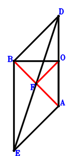
\(\because \) DBEA is a parallelogram \(\therefore \small\overrightarrow{OE}=\small\overrightarrow{OA} + \small\overrightarrow{OB} - \small\overrightarrow{OD}\).\(\because \) F is the midpoint of ED \(\therefore \small\overrightarrow{OF}=\dfrac{\small\overrightarrow{OD}}{2} + \dfrac{\small\overrightarrow{OE}}{2}=\dfrac{\small\overrightarrow{OA}}{2} + \dfrac{\small\overrightarrow{OB}}{2}\).\(\because \) BO=OA \( \therefore- \small\overrightarrow{OA}^{2} + \small\overrightarrow{OB}^{2}=0.\)In conclusion, \(\small\overrightarrow{BA} \cdot \small\overrightarrow{OF}=\small\overrightarrow{OF} \cdot \left(\small\overrightarrow{OA} - \small\overrightarrow{OB}\right)=\left(\dfrac{\small\overrightarrow{OA}}{2} + \dfrac{\small\overrightarrow{OB}}{2}\right) \cdot \left(\small\overrightarrow{OA} - \small\overrightarrow{OB}\right)=\dfrac{\small\overrightarrow{OA}^{2}}{2} - \dfrac{\small\overrightarrow{OB}^{2}}{2}=0\), that is, FO⊥BA.
Exercise 86： Let E be the centroid of △ABD. F, E, D are collinear and FD=3FE. OB=AO. Prove that OF⊥AB.
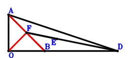
\(\because \) E is the centroid of △ABD \(\therefore \small\overrightarrow{OE}=\dfrac{\small\overrightarrow{OA}}{3} + \dfrac{\small\overrightarrow{OB}}{3} + \dfrac{\small\overrightarrow{OD}}{3}\).\(\because \) F, E, D are collinear and FD=3FE \(\therefore \small\overrightarrow{OF}=- \dfrac{\small\overrightarrow{OD}}{2} + \dfrac{3 \small\overrightarrow{OE}}{2}=\dfrac{\small\overrightarrow{OA}}{2} + \dfrac{\small\overrightarrow{OB}}{2}\).\(\because \) OB=AO \( \therefore- \small\overrightarrow{OA}^{2} + \small\overrightarrow{OB}^{2}=0.\)In conclusion, \(\small\overrightarrow{BA} \cdot \small\overrightarrow{OF}=\small\overrightarrow{OF} \cdot \left(\small\overrightarrow{OA} - \small\overrightarrow{OB}\right)=\left(\dfrac{\small\overrightarrow{OA}}{2} + \dfrac{\small\overrightarrow{OB}}{2}\right) \cdot \left(\small\overrightarrow{OA} - \small\overrightarrow{OB}\right)=\dfrac{\small\overrightarrow{OA}^{2}}{2} - \dfrac{\small\overrightarrow{OB}^{2}}{2}=0\), that is, OF⊥AB.
Exercise 96： Let DBFC be a parallelogram. ACEO is a trapezoid with CA//EO and CA=2EO. G is the midpoint of FD. BO=AO. Prove that BA⊥GE.
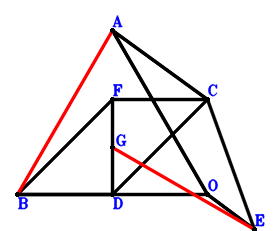
\(\because \) CA//EO and CA=2EO \(\therefore \small\overrightarrow{OE}=- \dfrac{\small\overrightarrow{OA}}{2} + \dfrac{\small\overrightarrow{OC}}{2}\).\(\because \) DBFC is a parallelogram \(\therefore \small\overrightarrow{OF}=\small\overrightarrow{OB} + \small\overrightarrow{OC} - \small\overrightarrow{OD}\).\(\because \) G is the midpoint of FD \(\therefore \small\overrightarrow{OG}=\dfrac{\small\overrightarrow{OD}}{2} + \dfrac{\small\overrightarrow{OF}}{2}=\dfrac{\small\overrightarrow{OB}}{2} + \dfrac{\small\overrightarrow{OC}}{2}\).\(\because \) BO=AO \( \therefore- \small\overrightarrow{OA}^{2} + \small\overrightarrow{OB}^{2}=0.\)In conclusion, \(\small\overrightarrow{BA} \cdot \small\overrightarrow{EG}=\left(\small\overrightarrow{OA} - \small\overrightarrow{OB}\right) \cdot \left(- \small\overrightarrow{OE} + \small\overrightarrow{OG}\right)=\left(\dfrac{\small\overrightarrow{OA}}{2} + \dfrac{\small\overrightarrow{OB}}{2}\right) \cdot \left(\small\overrightarrow{OA} - \small\overrightarrow{OB}\right)=\dfrac{\small\overrightarrow{OA}^{2}}{2} - \dfrac{\small\overrightarrow{OB}^{2}}{2}=0\), that is, BA⊥GE.
Exercise 99： Let CDOE be a trapezoid with DC//OE and DC=2OE. F is the centroid of △ABC. D, F, G are collinear and DG=3FG. BO=AO. Prove that GE⊥BA.
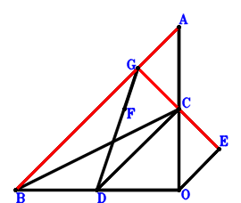
\(\because \) DC//OE and DC=2OE \(\therefore \small\overrightarrow{OE}=\dfrac{\small\overrightarrow{OC}}{2} - \dfrac{\small\overrightarrow{OD}}{2}\).\(\because \) F is the centroid of △ABC \(\therefore \small\overrightarrow{OF}=\dfrac{\small\overrightarrow{OA}}{3} + \dfrac{\small\overrightarrow{OB}}{3} + \dfrac{\small\overrightarrow{OC}}{3}\).\(\because \) D, F, G are collinear and DG=3FG \(\therefore \small\overrightarrow{OG}=- \dfrac{\small\overrightarrow{OD}}{2} + \dfrac{3 \small\overrightarrow{OF}}{2}=\dfrac{\small\overrightarrow{OA}}{2} + \dfrac{\small\overrightarrow{OB}}{2} + \dfrac{\small\overrightarrow{OC}}{2} - \dfrac{\small\overrightarrow{OD}}{2}\).\(\because \) BO=AO \( \therefore- \small\overrightarrow{OA}^{2} + \small\overrightarrow{OB}^{2}=0.\)In conclusion, \(\small\overrightarrow{BA} \cdot \small\overrightarrow{EG}=\left(\small\overrightarrow{OA} - \small\overrightarrow{OB}\right) \cdot \left(- \small\overrightarrow{OE} + \small\overrightarrow{OG}\right)=\left(\dfrac{\small\overrightarrow{OA}}{2} + \dfrac{\small\overrightarrow{OB}}{2}\right) \cdot \left(\small\overrightarrow{OA} - \small\overrightarrow{OB}\right)=\dfrac{\small\overrightarrow{OA}^{2}}{2} - \dfrac{\small\overrightarrow{OB}^{2}}{2}=0\), that is, GE⊥BA.
Exercise 133： Let CBOE be a trapezoid with BC//OE and BC=2OE. DFEC is a trapezoid with DC//FE and DC=2FE. G is the midpoint of DA. BO=AO. Prove that GF⊥BA.
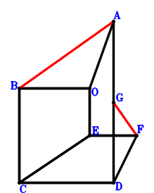
\(\because \) BC//OE and BC=2OE \(\therefore \small\overrightarrow{OE}=- \dfrac{\small\overrightarrow{OB}}{2} + \dfrac{\small\overrightarrow{OC}}{2}\).\(\because \) DC//FE and DC=2FE \(\therefore \small\overrightarrow{OF}=- \dfrac{\small\overrightarrow{OB}}{2} + \dfrac{\small\overrightarrow{OD}}{2}\).\(\because \) G is the midpoint of DA \(\therefore \small\overrightarrow{OG}=\dfrac{\small\overrightarrow{OA}}{2} + \dfrac{\small\overrightarrow{OD}}{2}\).\(\because \) BO=AO \( \therefore- \small\overrightarrow{OA}^{2} + \small\overrightarrow{OB}^{2}=0.\)In conclusion, \(\small\overrightarrow{BA} \cdot \small\overrightarrow{FG}=\left(\small\overrightarrow{OA} - \small\overrightarrow{OB}\right) \cdot \left(- \small\overrightarrow{OF} + \small\overrightarrow{OG}\right)=\left(\dfrac{\small\overrightarrow{OA}}{2} + \dfrac{\small\overrightarrow{OB}}{2}\right) \cdot \left(\small\overrightarrow{OA} - \small\overrightarrow{OB}\right)=\dfrac{\small\overrightarrow{OA}^{2}}{2} - \dfrac{\small\overrightarrow{OB}^{2}}{2}=0\), that is, GF⊥BA.
Exercise 144： Let CBDE be a parallelogram. EDOF is a trapezoid with DE//OF and DE=2OF. G is the midpoint of CA. BO=OA. Prove that GF⊥BA.
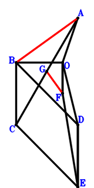
\(\because \) CBDE is a parallelogram \(\therefore \small\overrightarrow{OE}=- \small\overrightarrow{OB} + \small\overrightarrow{OC} + \small\overrightarrow{OD}\).\(\because \) DE//OF and DE=2OF \(\therefore \small\overrightarrow{OF}=- \dfrac{\small\overrightarrow{OD}}{2} + \dfrac{\small\overrightarrow{OE}}{2}=- \dfrac{\small\overrightarrow{OB}}{2} + \dfrac{\small\overrightarrow{OC}}{2}\).\(\because \) G is the midpoint of CA \(\therefore \small\overrightarrow{OG}=\dfrac{\small\overrightarrow{OA}}{2} + \dfrac{\small\overrightarrow{OC}}{2}\).\(\because \) BO=OA \( \therefore- \small\overrightarrow{OA}^{2} + \small\overrightarrow{OB}^{2}=0.\)In conclusion, \(\small\overrightarrow{BA} \cdot \small\overrightarrow{FG}=\left(\small\overrightarrow{OA} - \small\overrightarrow{OB}\right) \cdot \left(- \small\overrightarrow{OF} + \small\overrightarrow{OG}\right)=\left(\dfrac{\small\overrightarrow{OA}}{2} + \dfrac{\small\overrightarrow{OB}}{2}\right) \cdot \left(\small\overrightarrow{OA} - \small\overrightarrow{OB}\right)=\dfrac{\small\overrightarrow{OA}^{2}}{2} - \dfrac{\small\overrightarrow{OB}^{2}}{2}=0\), that is, GF⊥BA.
Exercise 161： Let ECBD be a parallelogram. O, F are the orthocenter and circumcenter of △DCA. BO=AO. Prove that FE⊥BA.
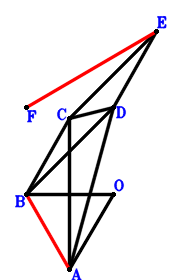
\(\because \) ECBD is a parallelogram \(\therefore \small\overrightarrow{OE}=- \small\overrightarrow{OB} + \small\overrightarrow{OC} + \small\overrightarrow{OD}\).\(\because \) O, F are the orthocenter and circumcenter of △DCA \(\therefore \small\overrightarrow{OF}=\small\overrightarrow{OA} + \small\overrightarrow{OC} + \small\overrightarrow{OD}\).\(\because \) BO=AO \( \therefore- \small\overrightarrow{OA}^{2} + \small\overrightarrow{OB}^{2}=0.\)In conclusion, \(\small\overrightarrow{BA} \cdot \small\overrightarrow{EF}=\left(\small\overrightarrow{OA} - \small\overrightarrow{OB}\right) \cdot \left(- \small\overrightarrow{OE} + \small\overrightarrow{OF}\right)=\left(\small\overrightarrow{OA} - \small\overrightarrow{OB}\right) \cdot \left(\small\overrightarrow{OA} + \small\overrightarrow{OB}\right)=\small\overrightarrow{OA}^{2} - \small\overrightarrow{OB}^{2}=0\), that is, FE⊥BA.
Exercise 165： Let O, F be the orthocenter and circumcenter of △DCA. G, E are the midpoints of FB, CD, respectively. BO=AO. Prove that GE⊥BA.
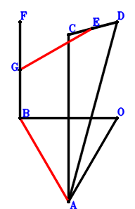
\(\because \) E is the midpoint of CD \(\therefore \small\overrightarrow{OE}=\dfrac{\small\overrightarrow{OC}}{2} + \dfrac{\small\overrightarrow{OD}}{2}\).\(\because \) O, F are the orthocenter and circumcenter of △DCA \(\therefore \small\overrightarrow{OF}=\small\overrightarrow{OA} + \small\overrightarrow{OC} + \small\overrightarrow{OD}\).\(\because \) G is the midpoint of FB \(\therefore \small\overrightarrow{OG}=\dfrac{\small\overrightarrow{OB}}{2} + \dfrac{\small\overrightarrow{OF}}{2}=\dfrac{\small\overrightarrow{OA}}{2} + \dfrac{\small\overrightarrow{OB}}{2} + \dfrac{\small\overrightarrow{OC}}{2} + \dfrac{\small\overrightarrow{OD}}{2}\).\(\because \) BO=AO \( \therefore- \small\overrightarrow{OA}^{2} + \small\overrightarrow{OB}^{2}=0.\)In conclusion, \(\small\overrightarrow{BA} \cdot \small\overrightarrow{EG}=\left(\small\overrightarrow{OA} - \small\overrightarrow{OB}\right) \cdot \left(- \small\overrightarrow{OE} + \small\overrightarrow{OG}\right)=\left(\dfrac{\small\overrightarrow{OA}}{2} + \dfrac{\small\overrightarrow{OB}}{2}\right) \cdot \left(\small\overrightarrow{OA} - \small\overrightarrow{OB}\right)=\dfrac{\small\overrightarrow{OA}^{2}}{2} - \dfrac{\small\overrightarrow{OB}^{2}}{2}=0\), that is, GE⊥BA.
Exercise 173： Let CGFE be a trapezoid with GC//FE and GC=2FE. E is the midpoint of CD. F is the midpoint of BA and GD. BO=AO. Prove that BA⊥FO.
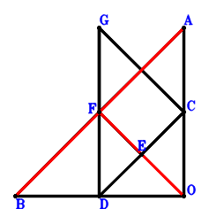
\(\because \) E is the midpoint of CD \(\therefore \small\overrightarrow{OE}=\dfrac{\small\overrightarrow{OC}}{2} + \dfrac{\small\overrightarrow{OD}}{2}\).\(\because \) F is the midpoint of BA \(\therefore \small\overrightarrow{OF}=\dfrac{\small\overrightarrow{OA}}{2} + \dfrac{\small\overrightarrow{OB}}{2}\).\(\because \) GC//FE and GC=2FE \(\therefore \small\overrightarrow{OG}=- \small\overrightarrow{OD} + 2 \small\overrightarrow{OF}=\small\overrightarrow{OA} + \small\overrightarrow{OB} - \small\overrightarrow{OD}\).\(\because \) F is the midpoint of GD \( \therefore- \small\overrightarrow{OA}^{2} + \small\overrightarrow{OB}^{2}=0.\)In conclusion, \(\small\overrightarrow{BA} \cdot \small\overrightarrow{OF}=\small\overrightarrow{OF} \cdot \left(\small\overrightarrow{OA} - \small\overrightarrow{OB}\right)=\left(\dfrac{\small\overrightarrow{OA}}{2} + \dfrac{\small\overrightarrow{OB}}{2}\right) \cdot \left(\small\overrightarrow{OA} - \small\overrightarrow{OB}\right)=\dfrac{\small\overrightarrow{OA}^{2}}{2} - \dfrac{\small\overrightarrow{OB}^{2}}{2}=0\), that is, BA⊥FO.
Exercise 188： Let HGOF be a parallelogram. E, F, G are the midpoints of CD, AD, BC, respectively. BO=AO. Prove that HE⊥BA.
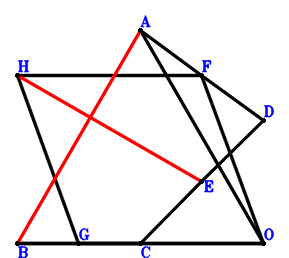
\(\because \) E is the midpoint of CD \(\therefore \small\overrightarrow{OE}=\dfrac{\small\overrightarrow{OC}}{2} + \dfrac{\small\overrightarrow{OD}}{2}\).\(\because \) F is the midpoint of AD \(\therefore \small\overrightarrow{OF}=\dfrac{\small\overrightarrow{OA}}{2} + \dfrac{\small\overrightarrow{OD}}{2}\).\(\because \) G is the midpoint of BC \(\therefore \small\overrightarrow{OG}=\dfrac{\small\overrightarrow{OB}}{2} + \dfrac{\small\overrightarrow{OC}}{2}\).\(\because \) HGOF is a parallelogram \(\therefore \small\overrightarrow{OH}=\dfrac{\small\overrightarrow{OA}}{2} + \dfrac{\small\overrightarrow{OB}}{2} + \dfrac{\small\overrightarrow{OC}}{2} + \dfrac{\small\overrightarrow{OD}}{2}\).\(\because \) BO=AO \( \therefore- \small\overrightarrow{OA}^{2} + \small\overrightarrow{OB}^{2}=0.\)In conclusion, \(\small\overrightarrow{BA} \cdot \small\overrightarrow{EH}=\left(\small\overrightarrow{OA} - \small\overrightarrow{OB}\right) \cdot \left(- \small\overrightarrow{OE} + \small\overrightarrow{OH}\right)=\left(\dfrac{\small\overrightarrow{OA}}{2} + \dfrac{\small\overrightarrow{OB}}{2}\right) \cdot \left(\small\overrightarrow{OA} - \small\overrightarrow{OB}\right)=\dfrac{\small\overrightarrow{OA}^{2}}{2} - \dfrac{\small\overrightarrow{OB}^{2}}{2}=0\), that is, HE⊥BA.
Exercise 199： Let CFBD and CAED be parallelograms. G is the midpoint of FE. BO=OA. Prove that GO⊥BA.
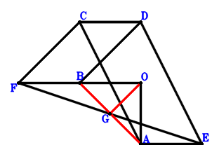
\(\because \) CAED is a parallelogram \(\therefore \small\overrightarrow{OE}=\small\overrightarrow{OA} - \small\overrightarrow{OC} + \small\overrightarrow{OD}\).\(\because \) CFBD is a parallelogram \(\therefore \small\overrightarrow{OF}=\small\overrightarrow{OB} + \small\overrightarrow{OC} - \small\overrightarrow{OD}\).\(\because \) G is the midpoint of FE \(\therefore \small\overrightarrow{OG}=\dfrac{\small\overrightarrow{OA}}{2} - \dfrac{\small\overrightarrow{OC}}{2} + \dfrac{\small\overrightarrow{OD}}{2} + \dfrac{\small\overrightarrow{OF}}{2}=\dfrac{\small\overrightarrow{OA}}{2} + \dfrac{\small\overrightarrow{OB}}{2}\).\(\because \) BO=OA \( \therefore- \small\overrightarrow{OA}^{2} + \small\overrightarrow{OB}^{2}=0.\)In conclusion, \(\small\overrightarrow{BA} \cdot \small\overrightarrow{OG}=\small\overrightarrow{OG} \cdot \left(\small\overrightarrow{OA} - \small\overrightarrow{OB}\right)=\left(\dfrac{\small\overrightarrow{OA}}{2} + \dfrac{\small\overrightarrow{OB}}{2}\right) \cdot \left(\small\overrightarrow{OA} - \small\overrightarrow{OB}\right)=\dfrac{\small\overrightarrow{OA}^{2}}{2} - \dfrac{\small\overrightarrow{OB}^{2}}{2}=0\), that is, GO⊥BA.
Exercise 215： Let BFEC be a trapezoid with BC//FE and BC=3FE. E is the centroid of △DAC. D, F, G are collinear and DG=3FG. BO=OA. Prove that GO⊥BA.
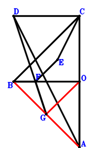
\(\because \) E is the centroid of △DAC \(\therefore \small\overrightarrow{OE}=\dfrac{\small\overrightarrow{OA}}{3} + \dfrac{\small\overrightarrow{OC}}{3} + \dfrac{\small\overrightarrow{OD}}{3}\).\(\because \) BC//FE and BC=3FE \(\therefore \small\overrightarrow{OF}=\dfrac{\small\overrightarrow{OA}}{3} + \dfrac{\small\overrightarrow{OB}}{3} + \dfrac{\small\overrightarrow{OD}}{3}\).\(\because \) D, F, G are collinear and DG=3FG \(\therefore \small\overrightarrow{OG}=- \dfrac{\small\overrightarrow{OD}}{2} + \dfrac{3 \small\overrightarrow{OF}}{2}=\dfrac{\small\overrightarrow{OA}}{2} + \dfrac{\small\overrightarrow{OB}}{2}\).\(\because \) BO=OA \( \therefore- \small\overrightarrow{OA}^{2} + \small\overrightarrow{OB}^{2}=0.\)In conclusion, \(\small\overrightarrow{BA} \cdot \small\overrightarrow{OG}=\small\overrightarrow{OG} \cdot \left(\small\overrightarrow{OA} - \small\overrightarrow{OB}\right)=\left(\dfrac{\small\overrightarrow{OA}}{2} + \dfrac{\small\overrightarrow{OB}}{2}\right) \cdot \left(\small\overrightarrow{OA} - \small\overrightarrow{OB}\right)=\dfrac{\small\overrightarrow{OA}^{2}}{2} - \dfrac{\small\overrightarrow{OB}^{2}}{2}=0\), that is, GO⊥BA.